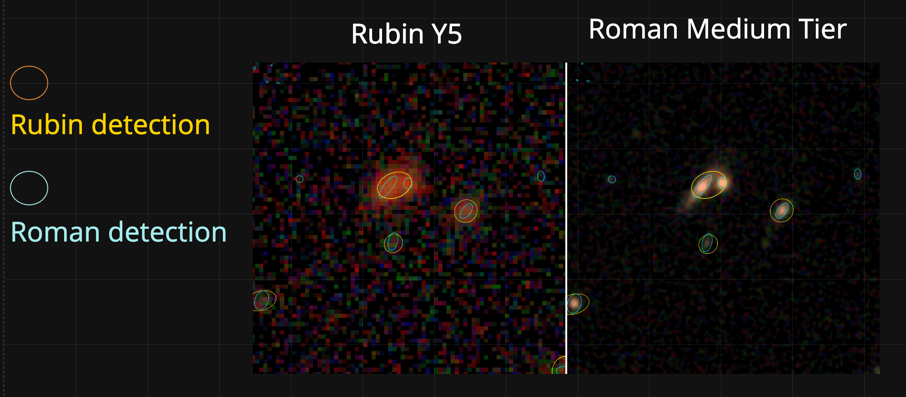
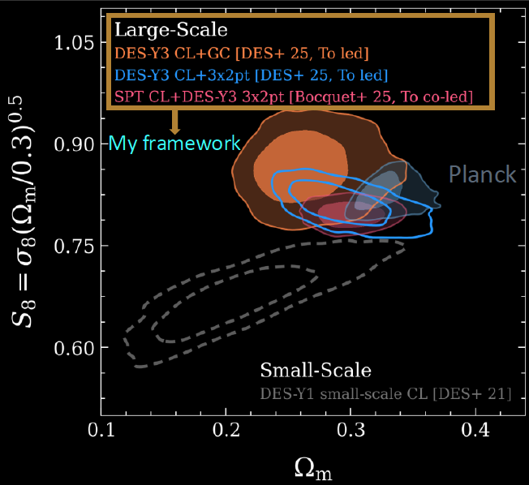
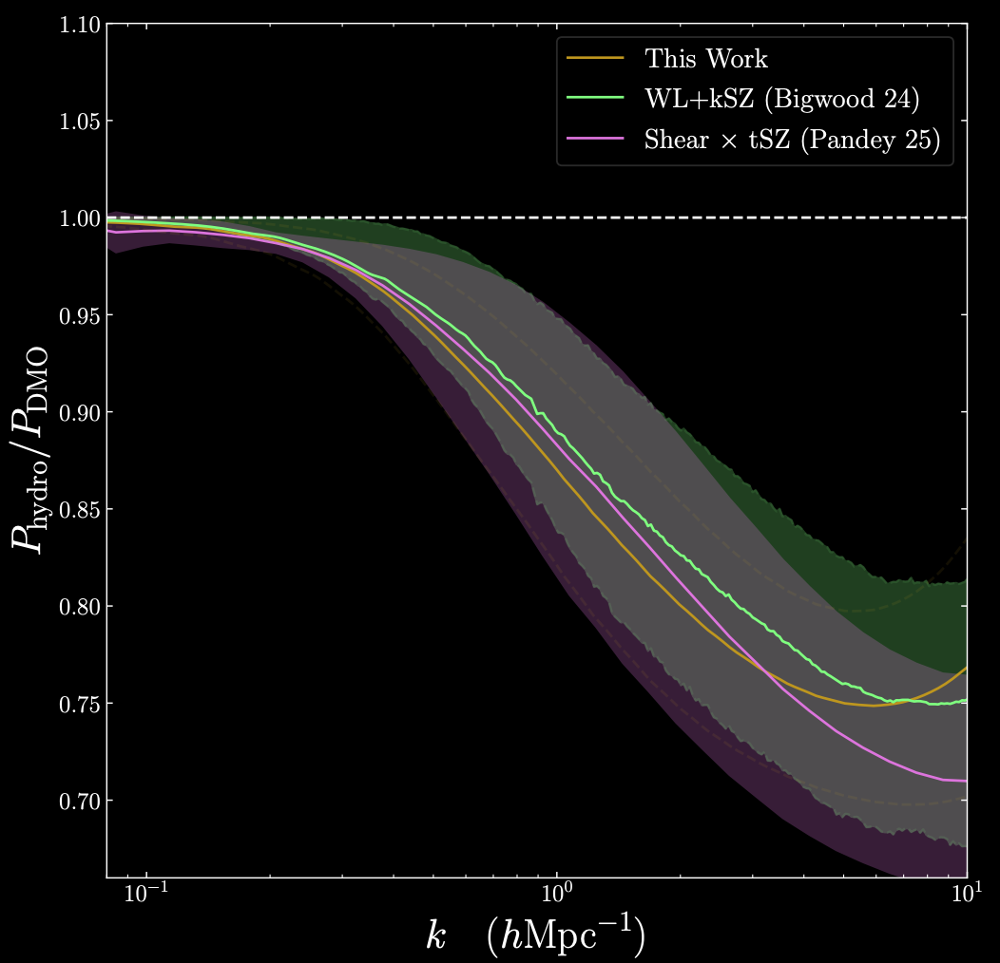
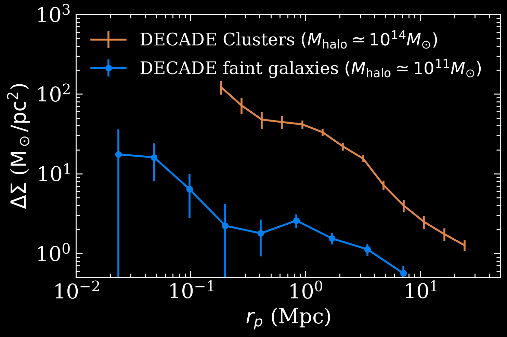
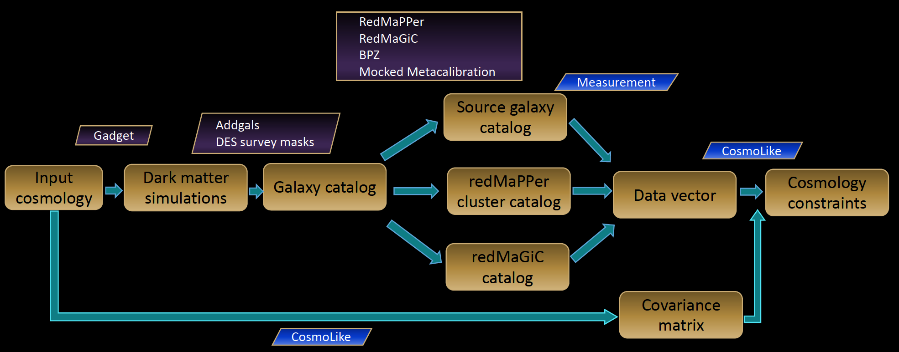
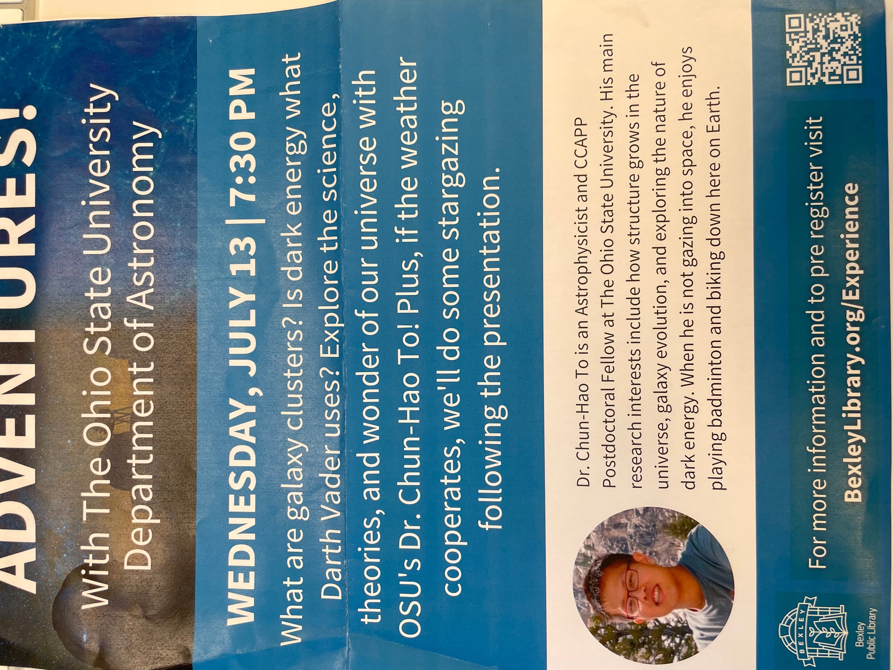

Chun-Hao To
Astrophysicist
Schmidt AI in Science Fellow
@ University of Chicago
Hi and welcome! I am an astrophysicist and a Schmidt AI fellow at the University of Chicago.
My main research interests are studying how structure grows in the universe, how structure growth affects galaxy's evolution, how to use galaxy as a probe of the nature of dark energy, and how to combine multiple probes of dark energy to yield best constraints. I use dark matter simulations, empirical models of galaxy-halo connections, theory, and deep survey data to tackle these questions.
While I am not doing research, I enjoy playing badminton and biking.
Contact: chunhaoto (at) gmail.com

I am deeply involved in the Roman High Latitude Imaging Survey Project Infrastructure Team (HLIS-PIT). I currently serve as the Survey Working Group Chair and also lead the development of photometric redshift estimation pipeline through the self-organizing map algorithm. In addition, I am developing Slimfarmer, a photometric measurement pipeline tailored to the unique challenges of space-based imaging with Roman. Unlike ground-based surveys, Roman faces significant correlated 1/f noise across pixels. Even after standard mitigation scheme adopted in JWST, the photometry error will be underestimated by several factors.
SlimFarmer uses source detection via SEP and multi-object model fitting via Tractor, and includes forced Rubin photometry integration for joint space-ground analysis. I implemented empirical flux-uncertainty corrections that account for correlated noise. This pipeline is being developed for the Roman HLIS-PIT and will enable precision photometry critical for Roman's weak lensing and cluster science.

I develop and validate a framework for cluster cosmology that treats galaxy clusters as part of the full large-scale structure rather than as isolated objects. This approach not only enables precision constraints from photometrically selected clusters, but also naturally combines cluster information with other probes in wide imaging surveys. Specifically, I jointly model the abundance of galaxy clusters and a set of large-scale two-point correlations: galaxy clustering, galaxy–cluster cross-correlations, cluster clustering, and cluster–galaxy weak lensing. I have led this analysis for DES Year 1 and Year 3, and am now leading the final DES multiprobe analysis combining clusters, galaxies, weak lensing, and Type Ia supernovae to test evolving dark energy.

Baryonic feedback from processes such as AGN activity and supernovae redistributes matter on nonlinear scales and currently limits the cosmological information we can extract from small-scale weak-lensing measurements. Galaxy clusters uniquely encode this baryon physics and therefore provide a natural calibration channel for weak-lensing cosmology with surveys like Rubin LSST and Roman.
I developed a fully differentiable framework that links baryonic physics—encoded in cluster mass–tSZ scaling relations—to its impact on the total matter distribution. A student I mentored, Nihar Dalal, has applied this framework to ACT-detected clusters with DES weak-lensing mass calibration, delivering the first observational constraint on baryonic feedback from tSZ-selected clusters.

I study the galaxy–halo connection across mass scales using weak gravitational lensing with careful control of systematics. At high halo masses, I have constrained the galaxy–halo connection using galaxy clusters in SDSS. At low masses, I use dwarf galaxies from DESI, obtaining some of the first weak-lensing measurements around spectroscopically confirmed dwarfs. Together, these studies map the galaxy–halo connection from clusters down to dwarfs, providing key inputs for tests of dark matter and models of galaxy formation.

I develop computational tools and simulations for current and next-generation surveys. We have built a neural-network–based likelihood evaluation tool that emulates the mapping between cosmological parameters and summary statistics, enabling fast and accurate Bayesian inference. I am also involved in the development of high-fidelity mock catalogs for DES, Roman, and LSST.
A full list of my publications is available on the NASA Astrophysics Data System (ADS).

Beyond research, I am deeply committed to mentoring and community engagement. I have advised undergraduate, master's, and graduate students across Stanford, The Ohio State University, and the University of Chicago. I also participate actively in science communication through public talks at local libraries in Columbus and volunteer work at the Adler Planetarium in Chicago to foster broader engagement with astrophysics.